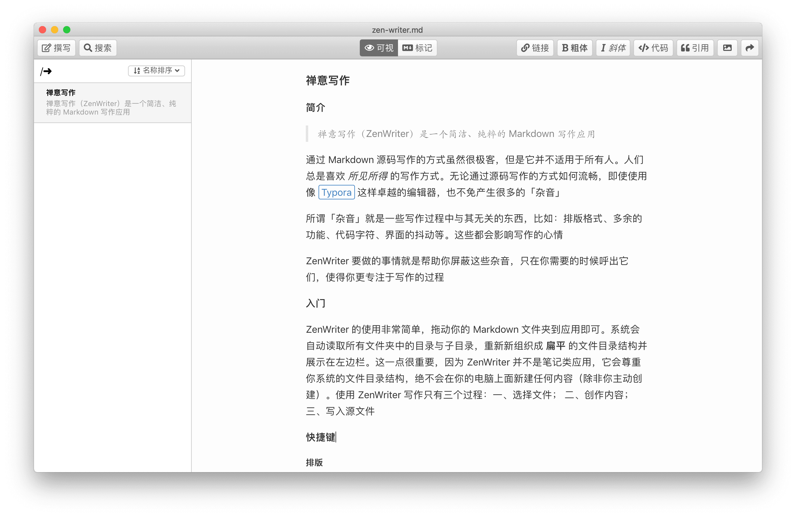
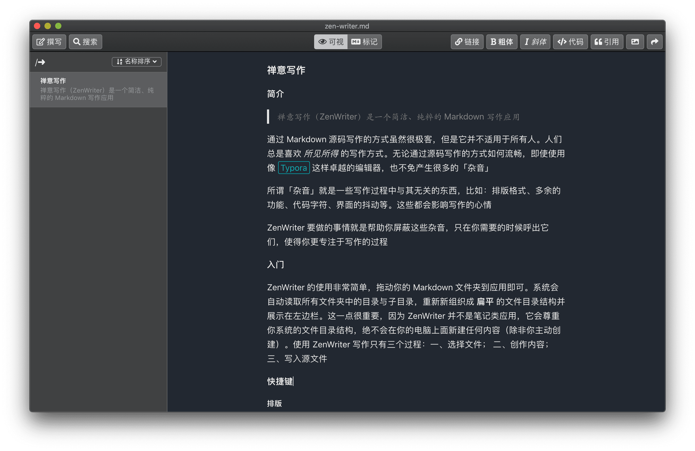
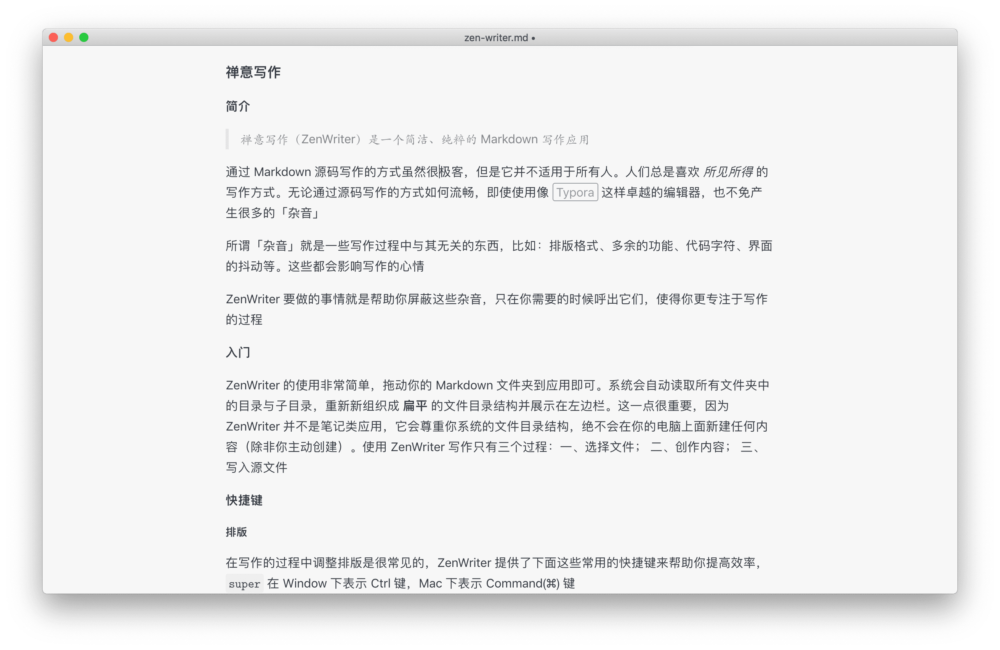
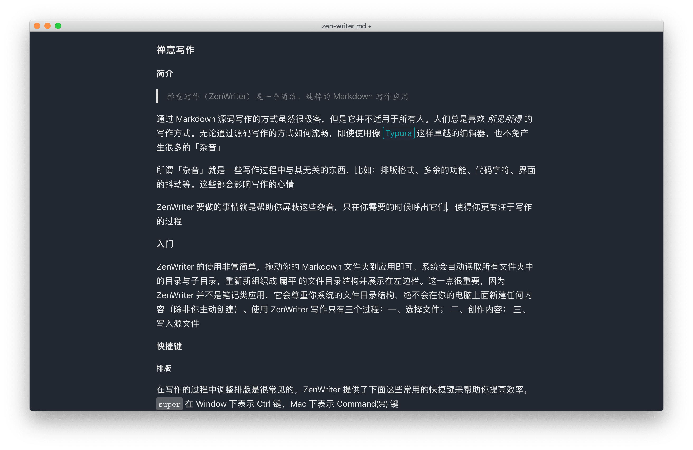
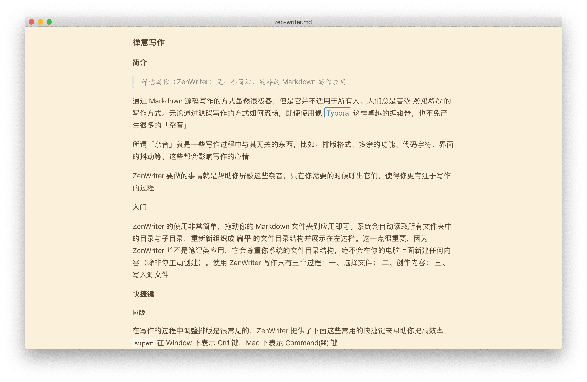

永和九年 岁在癸丑 暮春之初 会于会稽山阴之兰亭 修稧事也 群贤毕至 少长咸集 此地有崇山峻领 茂林修竹 又有清流激湍 映带左右 引以为流觞曲水 列坐其次 虽无丝竹管弦之盛 一觞一咏 亦足以畅叙幽情
是日也 天朗气清 惠风和畅 仰观宇宙之大 俯察品类之盛 所以游目骋怀 足以极视听之娱 信可乐也
夫人之相与 俯仰一世 或取诸怀抱 悟言一室之内 或因寄所托 放浪形骸之外 虽趣舍万殊 静躁不同 当其欣于所遇 暂得于己 怏然自足 不知老之将至 及其所之既倦 情随事迁 感慨系之矣 向之所欣 俯仰之间 已为陈迹 犹不能不以之兴怀 况修短随化 终期于尽 古人云「死生亦大矣」岂不痛哉
每揽昔人兴感之由 若合一契 未尝不临文嗟悼 不能喻之于怀 固知一死生为虚诞 齐彭殇为妄作 后之视今 亦由今之视昔 悲夫 故列叙时人 录其所述 虽世殊事异 所以兴怀 其致一也 后之揽者 亦将有感于斯文
—《兰亭集序》
 禅意写作 一个简洁、纯粹的 Markdown 写作应用
禅意写作 一个简洁、纯粹的 Markdown 写作应用
-
浅色模式  -
深色模式  -
浅色主题  -
深色主题  -
书籍主题 